ad-homelab
0. tl;dr
This project was started mainly to familiarize myself with some core system administration, networking and security concepts. Having little exposure to Active Directory at work, I figured the best way to learn about it was to set it up, break it, and fix it. Some things that I learned during this process include:
- Hypervisor Virtualization: Installed Proxmox VE 9.1 on a MFF Dell OptiPlex, configured virtual networking, provisioned virtual machines and appliances, and managed virtualized hosting of a simulated 'enterprise' network.
-
Virtual Networking: Configured four Proxmox Linux
bridges (
vmbr0–vmbr3) to logically isolate network segments into dedicated Layer 2 broadcast domains without the need for physical switches. -
Router & Firewall Deployment: Provisioned a
pfSense 2.8.1 virtual appliance (
LBS-PFS-01), mapped four VirtIO interfaces, defined gateway IPs, configured DHCP pools, and built stateful firewall rules to enforce inter-subnet access control. -
Identity Management: Deployed Windows Server 2022
(
LBS-DC-01) using VirtIO SCSI drivers, configured static IP, promoted the root Active Directory forest to domain controller, verified DNS self-resolution, and created a structured Organizational Unit (OU) tree. -
Endpoint Domain Joining: Joined a Linux
workstation (
LBS-JMP-01on Debian 13) to Active Directory usingrealmd,sssd, andpam_mkhomedir, and joined three Windows 11 Enterprise workstations (LBS-USR-01/02/03). -
Inter-Subnet Troubleshooting: Diagnosed and
resolved missing default route and DNS resolver flapping issues on
Linux using
ip route, and resolved inter-subnet ICMP/DNS drops by adjusting Windows Defender Firewall remote IP scope rules.
The fictional 'enterprise' was named 'Labrador Solutions', hence the
Proxmox node being named labrador. What they solve, I
still haven't figured out yet. I got a little carried away in my
initial planning of users, OUs, and fictional roles for the
'employees' of this company, but only two ended up making the cut,
the Technology Director Barry Unger and the CEO Cynthia Guzman
(post-A.I.M. careers). Scope creep took over a lot during planning,
but I finally settled on developing a solid base I can use for
future labbing purposes. There is still a lot I want to do with this
environment, and I hope to provide future writeups expanding on
those developments as they happen.
1. Introduction & Network Topology
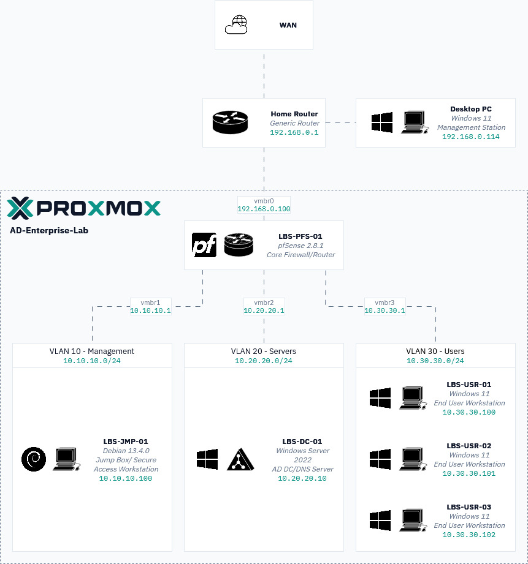
physical & virtual architecture
The lab runs on a rather affordable MFF Dell OptiPlex 7080 powered by an Intel Core i7 processor and 16 GB RAM running Proxmox VE 9.1. pfSense acts as the core gateway router, bridging the internal subnets to my physical home LAN while maintaining isolation between subnets and enforcing firewall rules.
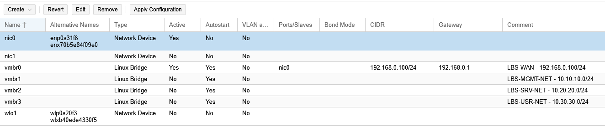
Network interface showing Linux bridges vmbr0, vmbr1, vmbr2, and vmbr3 configured for Layer 2 network segregation." loading="lazy">network subnet reference
The network is segmented into three primary internal subnets alongside the physical WAN connection:
| Subnet Name | VLAN / ID | Network CIDR | Gateway IP | Dedicated Purpose & Assigned Hosts |
|---|---|---|---|---|
| MANAGEMENT | VLAN 10 | 10.10.10.0/24 |
10.10.10.1 |
Administration subnet (LBS-JMP-01). |
| SERVERS | VLAN 20 | 10.20.20.0/24 |
10.20.20.1 |
Server infrastructure holding identity core and DNS
(LBS-DC-01).
|
| USERS | VLAN 30 | 10.30.30.0/24 |
10.30.30.1 |
End-user workstations (LBS-USR-01/02/03). |
| WAN | Uplink | 192.168.0.0/24 |
192.168.0.1 |
Upstream physical network connection leased from router
(192.168.0.163). Local Proxmox host
(192.168.0.100).
|
2. Virtual Networking & Firewall Setup (Proxmox & pfSense)
To achieve network isolation on a single physical hypervisor, I configured Proxmox Linux bridges and deployed a pfSense firewall VM to handle Layer 3 routing and stateful filtering. pfSense here serves a dual purpose as the core router as well as our firewall. This step would look a lot different in a real enterprise, such as separate VLANs for wireless APs, OT appliances and IoT devices. Several physical and architectural decisions are also missing due to self hosting on a single device, chiefly physical cable runs, MDF/IDF/access switch location consideration, and tiered network topology requiring VLAN trunking and access ports. As the primary purpose of this homelab was high-level network segmentation and Active Directory familiarization, these concerns are not fully addressed in this writeup, but I do plan on implementing more enterprise-level best practices in the future.
proxmox virtual switch configuration
In Proxmox VE under labrador > System > Network,
I created four virtual Linux bridges to serve as virtual switches:
-
vmbr0: Bound to physical NIC (nic0), handling external WAN traffic. -
vmbr1: Internal bridge dedicated to the Management subnet (10.10.10.0/24). -
vmbr2: Internal bridge dedicated to the Server subnet (10.20.20.0/24). -
vmbr3: Internal bridge dedicated to the User subnet (10.30.30.0/24).
provisioning pfSense (LBS-PFS-01)
I provisioned the pfSense virtual machine LBS-PFS-01
(VM ID 101) with 2 vCPUs (set to host
passthrough for optional AES-NI crypto acceleration), 2 GB RAM, a 32
GB VirtIO disk, and q35 machine type.
To connect our new pfSense core to all subnets, I attached four VirtIO network interfaces under VM Hardware:
net0->vmbr0(WAN)net1->vmbr1(Management)net2->vmbr2(Servers)net3->vmbr3(Users)
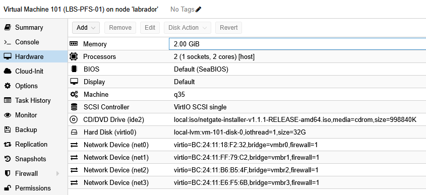
console interface assignment & subnet routing
I attached and then booted my VM from the
pfSense CE 2.8.1 ISO, following the installation wizard
and configuring the first interface. Subsequent interfaces could not
be added until installation was complete, so I created my Management
VLAN (VLAN 10) first.
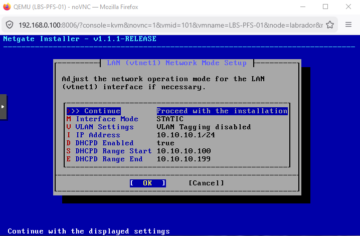
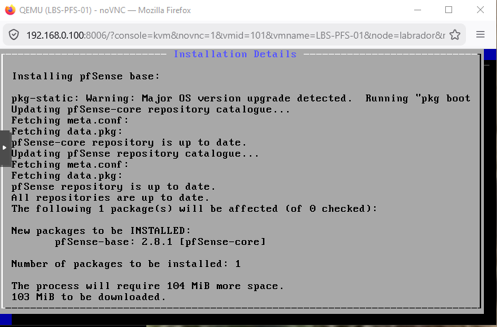
Once installation was complete and my VM had rebooted, I assigned
interface mappings via console Option 1:
-
WAN->vtnet0(192.168.0.163/24via DHCP) -
LAN->vtnet1(10.10.10.1/24) -
OPT1->vtnet2(10.20.20.1/24) -
OPT2->vtnet3(10.30.30.1/24)
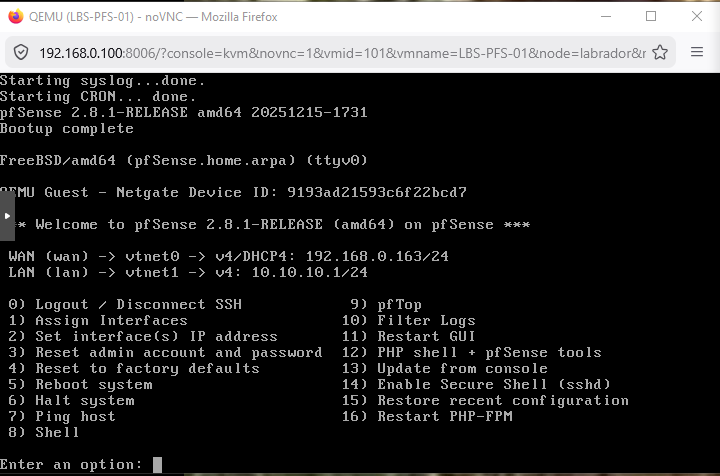
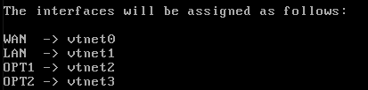
Using console Option 2, I set static gateway IP
addresses (.1) and DHCP pool ranges for each internal
interface. One thing I would have done differently in a real
environment is to increase the DHCP pool for the USERS subnet, and
shrink it and prioritize using static assignments for the MANAGEMENT
and SERVERS subnets.
-
MANAGEMENT (
vtnet1): IP10.10.10.1/24| DHCP Scope:10.10.10.100–10.10.10.199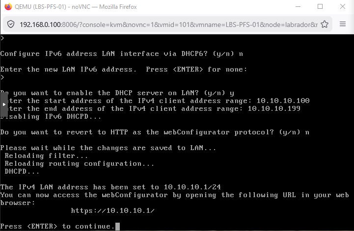
(Console output confirming LAN interface configuration at 10.10.10.1/24 with active webConfigurator URL.) -
SERVERS (
vtnet2): IP10.20.20.1/24| DHCP Scope:10.20.20.100–10.20.20.199(Console output confirming OPT1 interface configuration at 10.20.20.1/24 and DHCP pool creation.) -
USERS (
vtnet3): IP10.30.30.1/24| DHCP Scope:10.30.30.100–10.30.30.199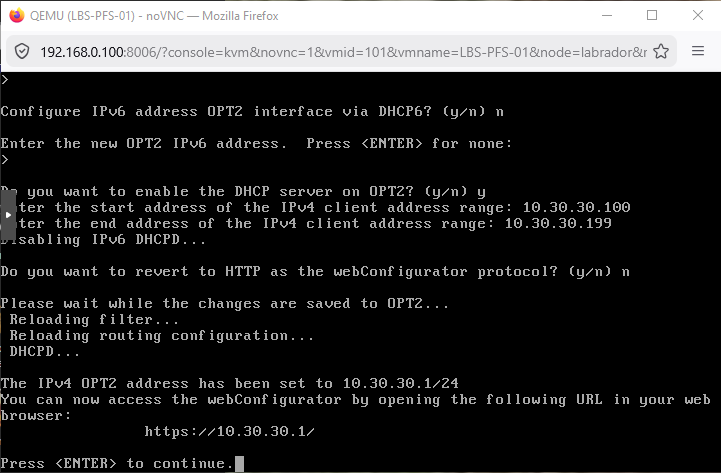
(Console output confirming OPT2 interface configuration at 10.30.30.1/24 and DHCP scope settings.) 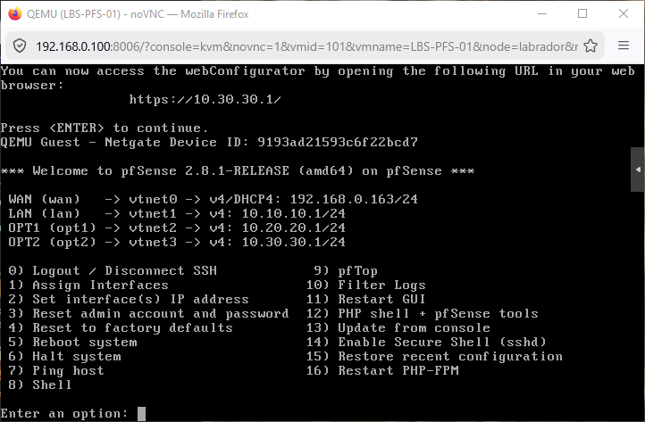
(pfSense main menu confirming active statuses and IP addresses for WAN, LAN, OPT1, and OPT2 interfaces.)
web gui configuration & interface customization
From the Debian Jump Box on the Management subnet, I accessed the
WebGUI at https://10.10.10.1. (For setup and joining of
the Debian host, see
linux jump box deployment & domain join)
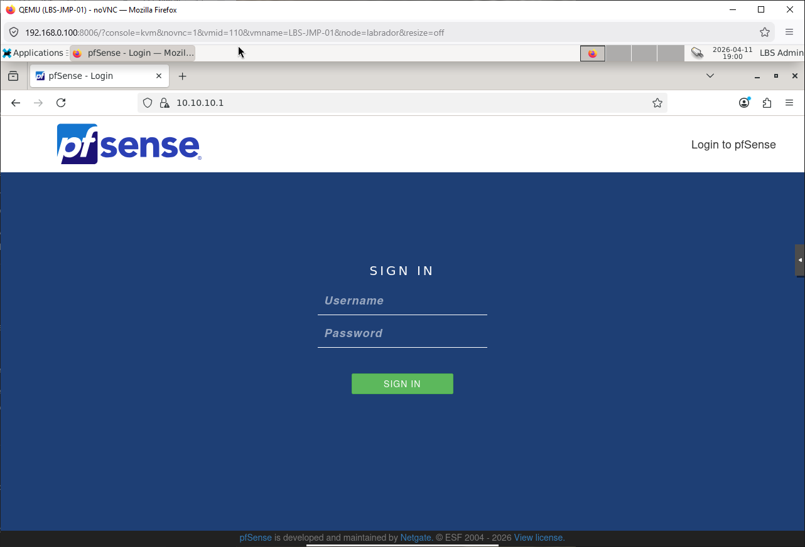
In pfSense under System > General Setup, I
configured System Information parameters
(LBS-PFS-01.labrador.corp, and set external DNS servers
1.1.1.1 (CloudFlare) and 8.8.8.8
(Google)).
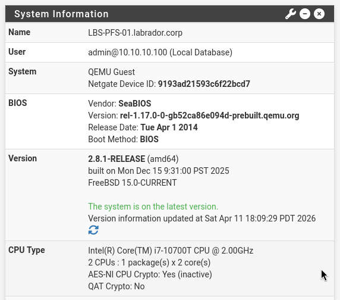
Under Interfaces, I renamed the default interface
labels to match our lab naming schema. WAN was already
doing the right thing, so they stayed the same.
-
LAN->MANAGEMENT(10.10.10.1/24) -
OPT1->SERVERS(10.20.20.1/24) -
OPT2->USERS(10.30.30.1/24)
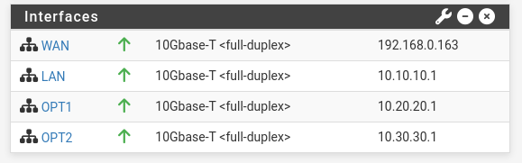
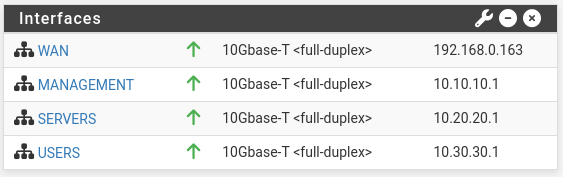
NOTE: For most of this lab, barring instances where a network connection was necessary (such as installing needed packages on Debian to join it to our AD DC) the WAN interface was disabled in pfSense. This was out of an abundance of precaution, and the volatile nature of a homelab that is not fully configured or hardened against internet threats. The majority of network traffic and subsequent troubleshooting occurred internally passing through the pfSense firewall between the various VLANs/subnets configured here, though as I will cover later even disabling the WAN brought unexpected issues.
firewall rules for USERS interface
In a modern production environment that aligns with zero trust
architecture and defense-in-depth principles, multiple redundant
controls would need to be implemented outside of a single stateful
firewall. Due to the scope of this lab focusing on initial design
and Active Directory, as well as my unfamiliarity with pfSense, I
used this opportunity to configure basic inter-subnet security rules
to prevent end-users from probing or interacting with the MANAGEMENT
and SERVERS subnets while creating an exception for required AD
services under Firewall > Rules > USERS.
-
Allow DC Access:
PASS| Source:USERS subnets| Destination:10.20.20.10(LBS-DC-01) | Description:User allow DC(Permits Kerberos, DNS, LDAP, SMB authentication). -
Block Server Access:
BLOCK| Source:USERS subnets| Destination:SERVERS subnets| Description:User block Servers(Prevents lateral scanning to non-DC servers). -
Block Management Access:
BLOCK| Source:USERS subnets| Destination:MANAGEMENT subnets| Description:User block Management(Blocks client access to Jump Box and pfSense WebGUI). -
Allow Outbound Egress:
PASS| Source:USERS subnets| Destination:*| Description:User allow Other/WAN(Permits standard outbound traffic when WAN is active).
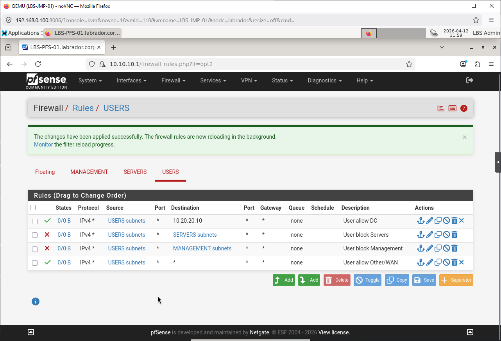
3. Active Directory & Identity and Access Management
The IAM infrastructure of the homelab is centered on a Windows
Server 2022 Domain Controller (LBS-DC-01) which
provides centralized authentication, directory services, and
internal DNS resolution.
deploying windows server 2022 (LBS-DC-01)
I spun up the primary Domain Controller LBS-DC-01
(VM ID 201) in Proxmox with 2 vCPUs
(host passthrough), 4 GB of RAM, a q35
machine type, OVMF (UEFI) BIOS, TPM 2.0 state file, a 60 GB VirtIO
SCSI disk, and attached it to vmbr2
(LBS-SRV-NET).
Because Windows doesn't ship with native KVM drivers, I loaded the
Red Hat VirtIO SCSI passthrough controller driver
(vioscsi.inf) from the mounted
virtio-win-0.1.285.iso to complete the VM installation.
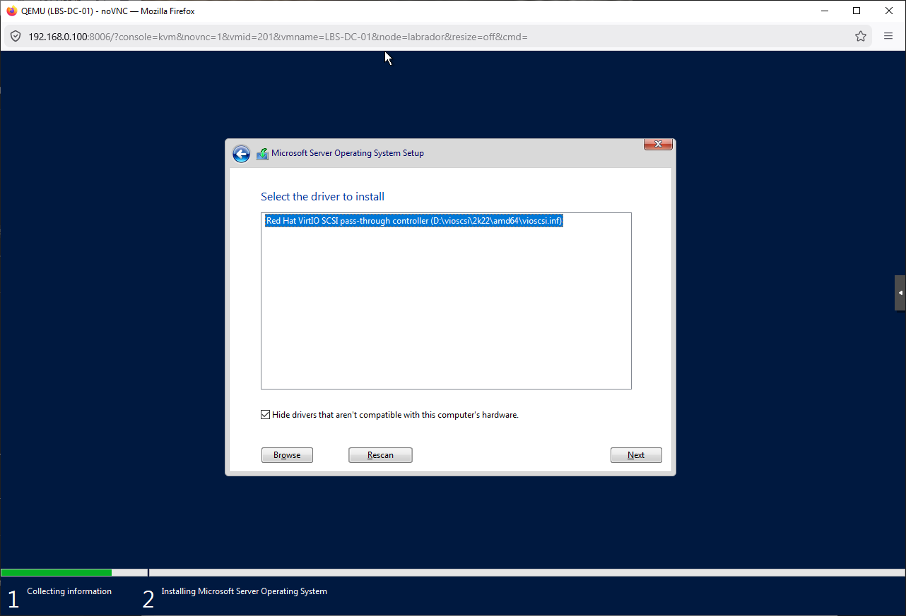
Once that was finished I installed
virtio-win-gt-x64.msi to deploy VirtIO guest agent
tools and driver services.
static ip assignment & connectivity verification
Using ncpa.cpl on LBS-DC-01, I set static
IPv4 configuration:
- IP Address:
10.20.20.10 - Subnet Mask:
255.255.255.0 -
Default Gateway:
10.20.20.1(pfSenseSERVERSgateway) -
Preferred DNS:
10.20.20.1(temporary bootstrap) /127.0.0.1/localhost(post-promotion)
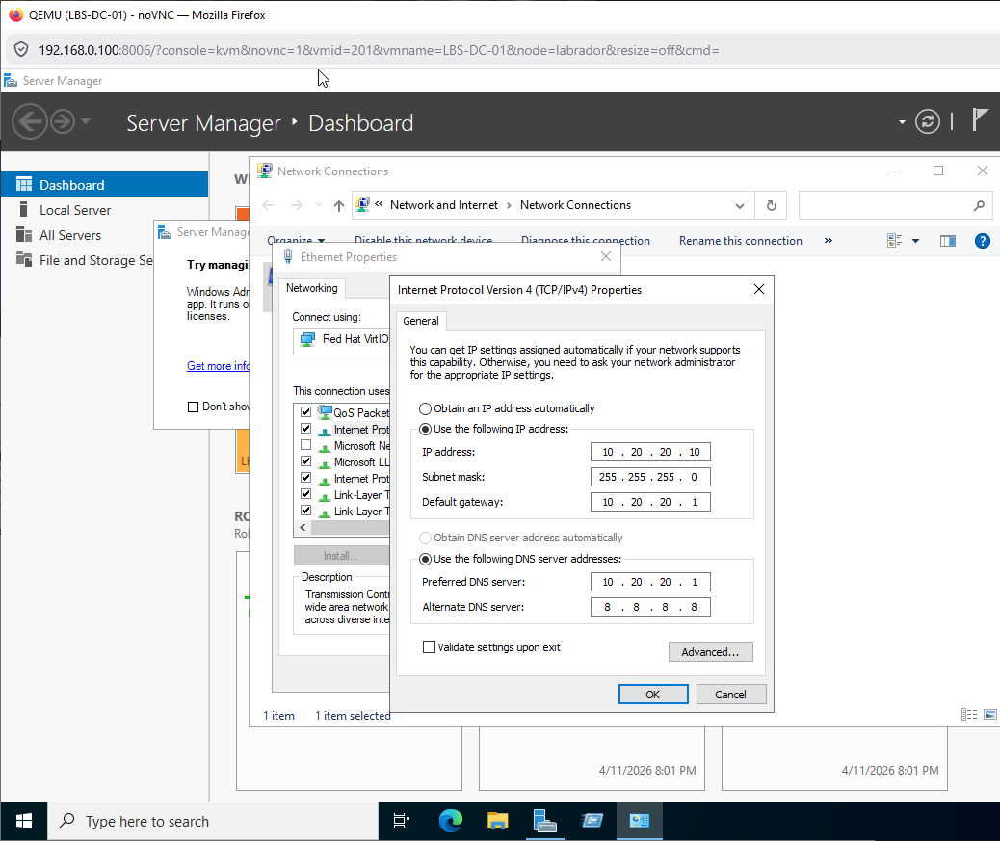
I verified Layer 3 gateway routing by pinging google.com to check external DNS:
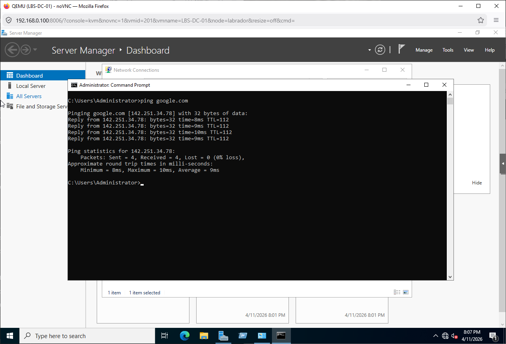
AD DS forest promotion & dns self resolution
In the Server Manager I installed the Active Directory Domain Services and DNS Server roles, then promoted the server to a Domain Controller:
- Deployment Operation: Add a new forest
- Root Domain Name:
labrador.corp - Domain NetBIOS Name:
LABRADOR - Forest/Domain Functional Level: Windows Server 2016
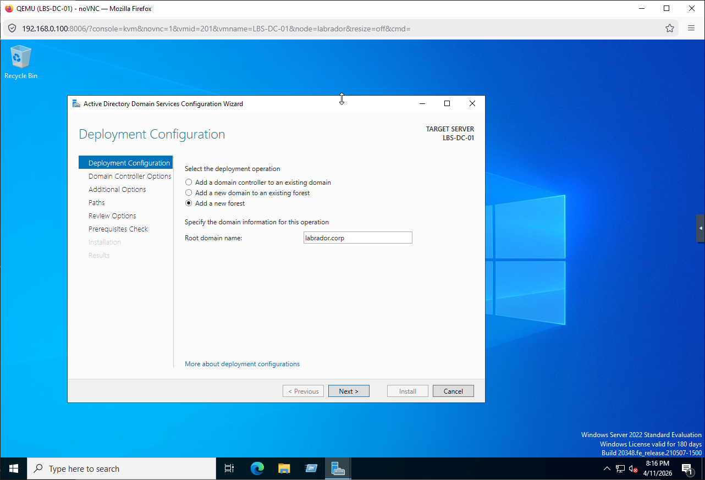
After promotion and rebooting the VM, the Windows logon screen
confirmed domain authority (LABRADOR\Administrator).
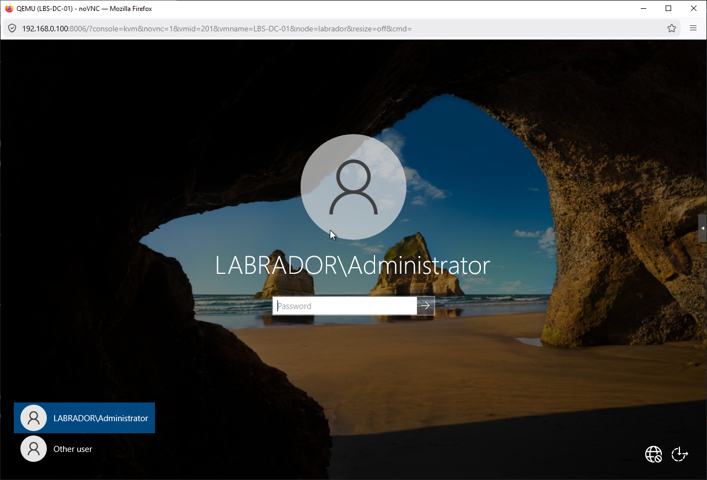
I verified local DNS self resolution using nslookup on
the local domain, and everything checked out.
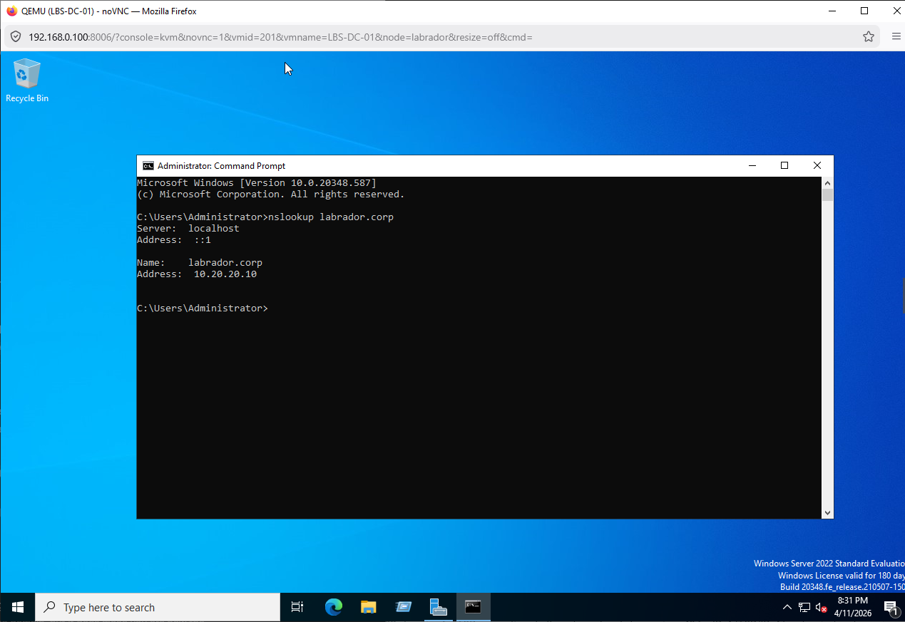
ADUC organizational unit hierarchy & user provisioning
In Server Manager under Tools, I opened Active
Directory Users and Computers (ADUC) (dsa.msc).
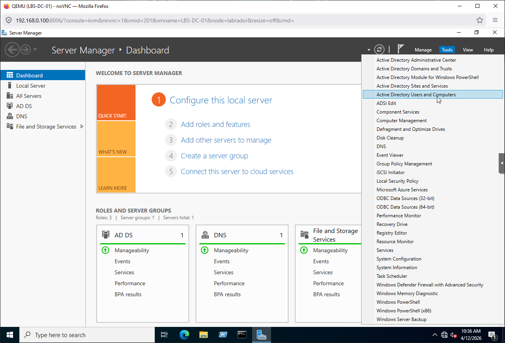
To maintain a clean directory structure, I created a root
Organizational Unit named LBS directly under
labrador.corp.
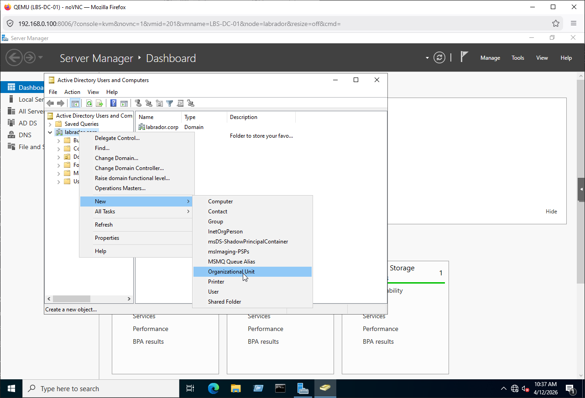
Under the LBS root OU, I created child OUs to keep
domain assets and users organized.
-
_Admins: Dedicated administrative user accounts. -
Servers: Server computer objects (LBS-DC-01). -
Workstations: Client endpoint objects (LBS-USR-01). -
Users: Standard non-administrative user accounts (cynthia.guzman). Service_Accounts: Service accounts.
I provisioned an administrative and standard user account to validate privilege separation:
-
Domain Admin Account (
_AdminsOU):-
Full Name: Barry Unger | UPN:
adm-barry.unger@labrador.corp -
Group Memberships:
Domain Admins,Enterprise Admins,Schema Admins.
-
Full Name: Barry Unger | UPN:
-
Standard End-User Account (
UsersOU):-
Full Name: Cynthia Guzman | UPN:
cynthia.guzman@labrador.corp - Group Memberships:
Domain Users.
-
Full Name: Cynthia Guzman | UPN:
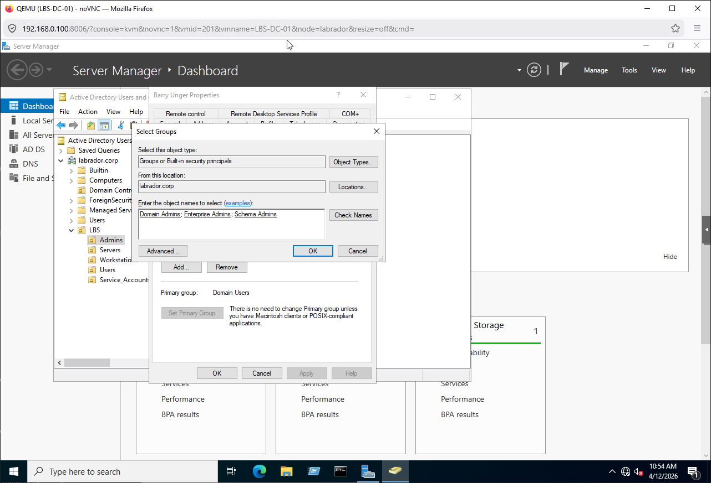
4. Endpoints & Domain Integration
To test domain management across different operating systems, I
deployed a Linux jump box on VLAN 10 and a Windows 11 Enterprise
workstation on VLAN 30, joining both to labrador.corp.
I then provisioned 2 more Windows 11 workstations via VM cloning
followed by manual configuration in Proxmox.
linux jump box deployment & domain join (LBS-JMP-01)
I created LBS-JMP-01 (VM ID 110) in
Proxmox with 2 vCPUs (host passthrough), 1 GB RAM, OVMF
(UEFI) BIOS, a 20 GB VirtIO disk, attached to vmbr1
(LBS-MGMT-NET), and installed Debian 13. The design
philosophy behind using a jump box was to serve as a secure gateway
between end-users and critical infrastructure. By requiring a
dedicated admin workstation to access the pfSense web GUI, neither
regular employees nor potential threat actors would be able to
access the management interface (without first breaching the secured
jump box that is).
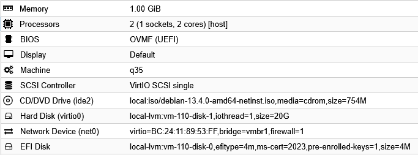
Upon booting, interface ens18 acquired IP
10.10.10.100 via pfSense DHCP.
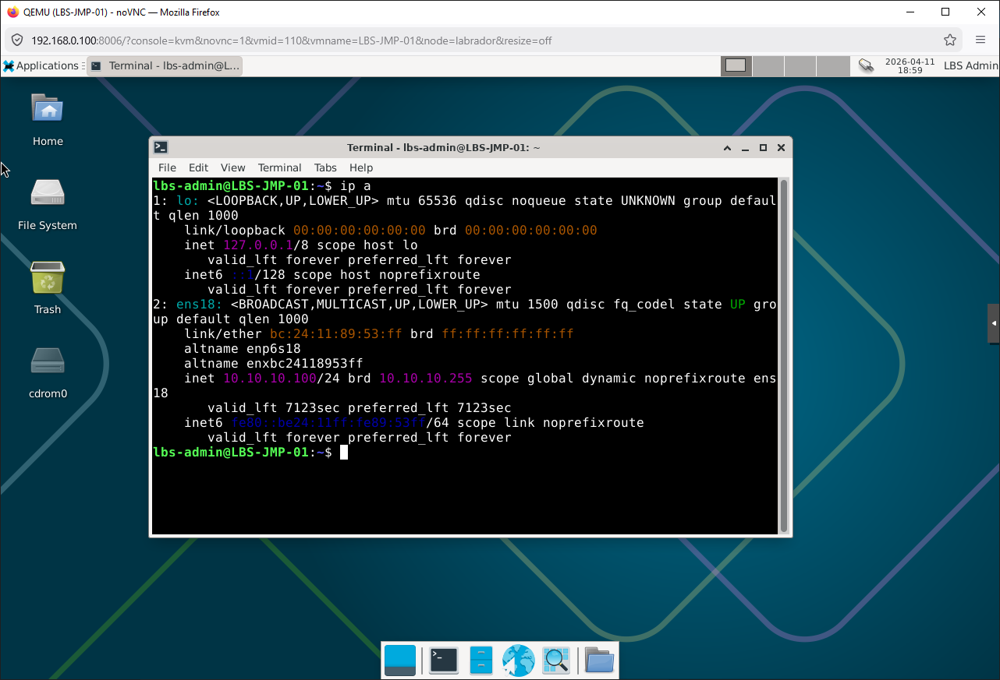
After resolving inter-subnet gateway and DNS settings (detailed in Section 5), I installed domain join dependencies required to allow Debian to join AD.
sudo apt update && sudo apt install -y realmd sssd sssd-tools libnss-sss libpam-sss adcli samba-common-bin oddjob oddjob-mkhomedir packagekitI ran realm discovery to locate the Active Directory domain:
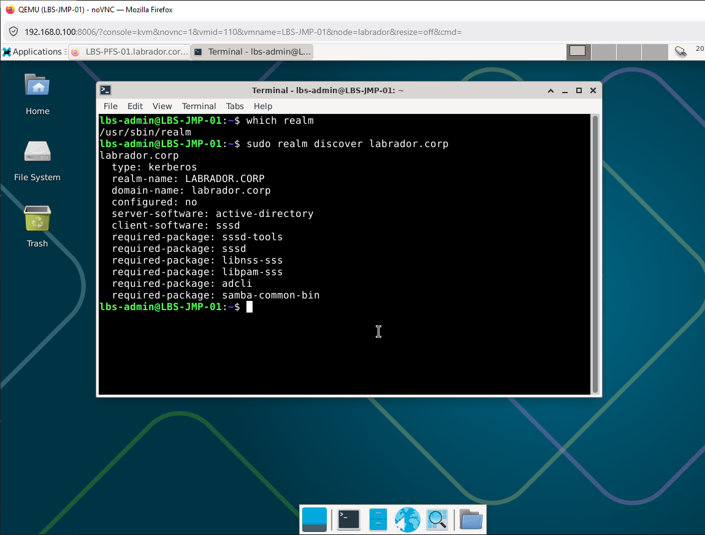
I joined Debian to labrador.corp using
adm-barry.unger credentials, configured PAM automatic
home directory creation (pam_mkhomedir), and verified
domain login via su:
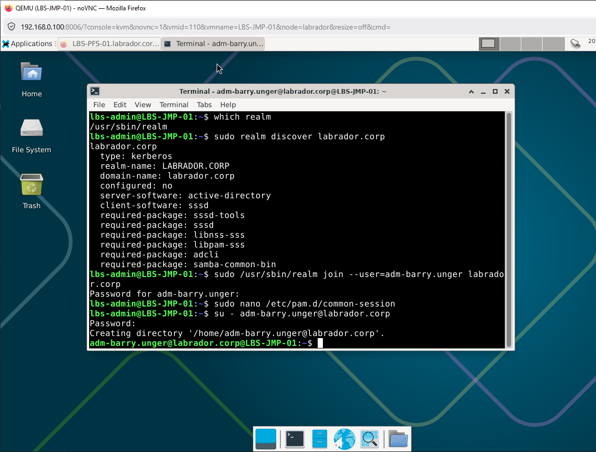
In ADUC on LBS-DC-01, I verified that
LBS-JMP-01 registered as an active domain computer
object, then moved it to LBS > Management.
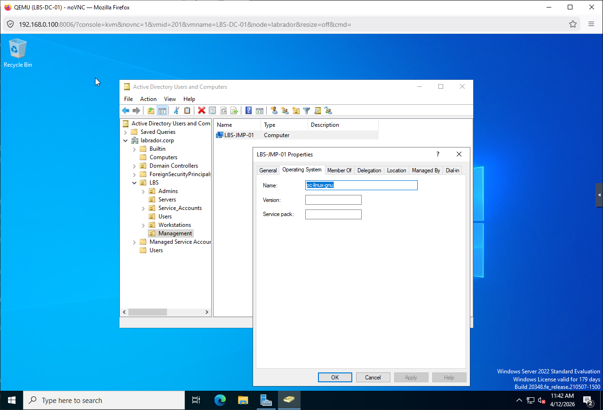
windows 11 enterprise workstation deployment (LBS-USR-01)
I provisioned LBS-USR-01 (VM ID 301) on
vmbr3 (LBS-USR-NET) with 4 vCPUs
(host passthrough), 4 GB RAM, OVMF (UEFI) BIOS, vTPM
2.0, and a 64 GB VirtIO SCSI disk.
Windows 11 has a fantastic "Out of the Box Experience"
(OOBE), which is rather annoying for homelab purposes (I'd rather
not create a bunch of Microsoft accounts I have no intention on
using). Thankfully we are able to bypass network account enforcement
by opening a command prompt (Shift + F10), executing
OOBE\BYPASSNRO, and creating a local administrator
account (LocalAdmin). Post-boot, I installed VirtIO
guest tools (virtio-win-guest-tools.exe).
LBS-USR-01 received dynamic IP
10.30.30.100 from pfSense DHCP with DNS automatically
set to 10.20.20.10. In System Properties
(sysdm.cpl), I renamed the computer
LBS-USR-01 and joined domain
labrador.corp.
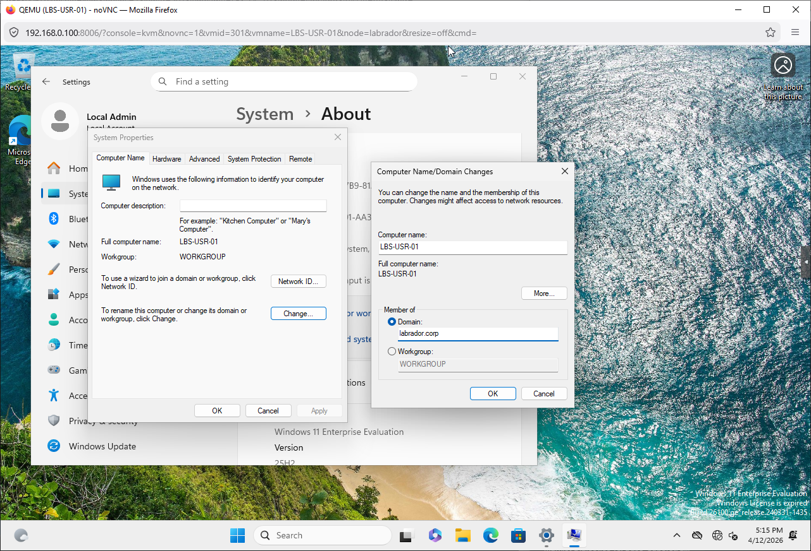
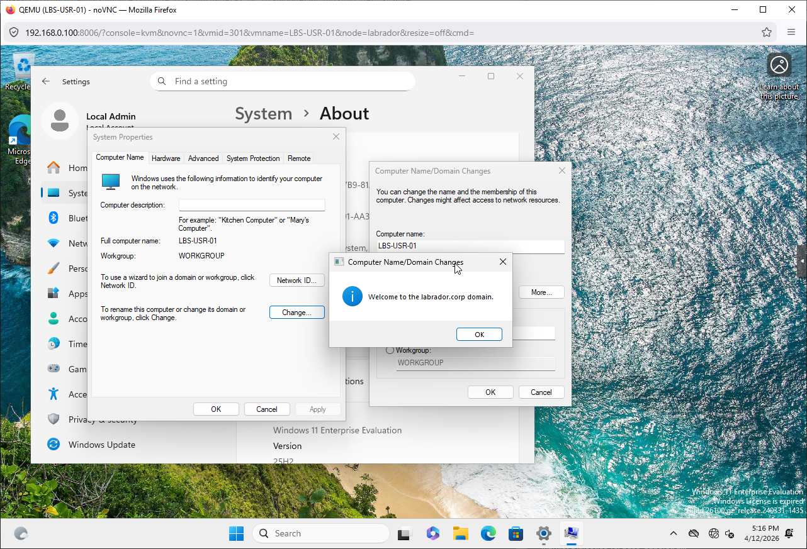
privilege separation verification
To make sure that Domain Users were not able to immediately go buck
wild on their workstation's settings, I tested logging in to
LBS-USR-01 as both a standard user and an
administrator.
-
Logging in as standard user
cynthia.guzman@labrador.corp, administrative actions (such as opening Device Manager or changing system settings) triggered a User Account Control (UAC) prompt requiring admin credentials. In this way, an administrator can still authorize changes without logging out the current user. -
Logging in as
adm-barry.unger@labrador.corp, the account executed administrative actions with full elevation.
While this initial privilege confirmation was sufficient for now, in a real environment we would likely want to harden our default workstation policies to align with a framework such as CIS Benchmark and additional industry specific controls required by frameworks such as HIPAA, PCI-DSS or NERC CIP.
5. Key Troubleshooting Scenarios & Lessons Learned
During the build, I ran into two inter-subnet routing errors that required a bit of digging in order to get running properly.
scenario 1: linux jump box gateway loss & DNS resolver flapping
The issue: As soon as I cut the WAN interface on
pfSense, my Debian Jump Box (LBS-JMP-01) lost its
default gateway routing entry (10.10.10.1) and
NetworkManager overwrote
/etc/resolv.conf, dropping local domain resolution. Now
I couldn't reach anything from my jump box, which would
make it a useless hunk of metal if it wasn't a software based
emulation of a computer.
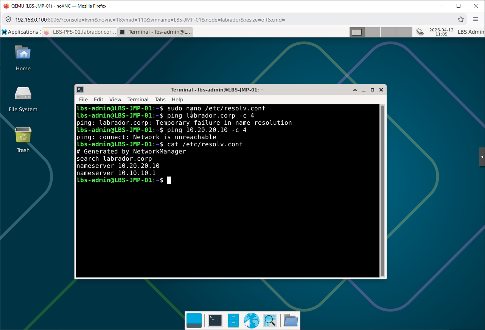
What caused it? NetworkManager dynamic
lease renewals stripped the default route entries when the upstream
WAN interface state change occurred.
The fix:
-
I checked
/etc/resolv.confand verified that yes, my default route had disappeared. -
I manually restored the static default gateway in Debian:
sudo ip route add default via 10.10.10.1. -
I configured
/etc/resolv.confwithnameserver 10.20.20.10and applied the Linux immutable attribute (chattr +i) to make sure no troublesome daemons would mess with my network settings:
# Add default route and lock DNS resolver configuration
sudo ip route add default via 10.10.10.1
sudo sh -c 'echo "nameserver 10.20.20.10" > /etc/resolv.conf'
sudo chattr +i /etc/resolv.conf
# Verify connectivity to Domain Controller
lbs-admin@LBS-JMP-01:~$ ping 10.20.20.10 -c 4
PING 10.20.20.10 (10.20.20.10) 56(84) bytes of data.
64 bytes from 10.20.20.10: icmp_seq=1 ttl=127 time=0.705 ms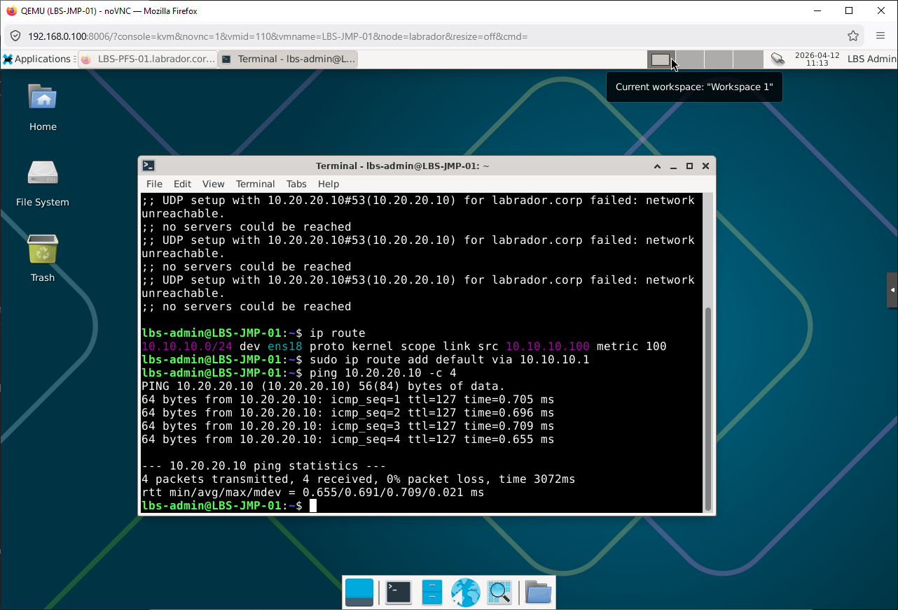
scenario 2: inter-subnet ICMP & DNS timeout drops by windows defender firewall
The issue: Although pfSense firewall rules
permitted traffic between Management (10.10.10.0/24)
and Server (10.20.20.0/24) subnets,
LBS-JMP-01 could not query DNS (UDP 53) or
ping LBS-DC-01 (10.20.20.10).
What caused it? After some Googling, I found that
the built in Defender Firewall on Windows Server 2022 restricts
inbound DNS and ICMP Echo packets to the local subnet
(10.20.20.0/24), meaning the packets originating from
my management subnet (10.10.10.0/24) were being
dropped.
The fix: On LBS-DC-01, I opened
Windows Defender Firewall (wf.msc), and under Inbound
Rules for DNS (UDP-In)/(TCP-In) and
File and Printer Sharing (Echo Request - ICMPv4-In), I
edited the Properties > Scope tab, changing Remote IP Address
settings from "Local subnet" to Any IP address.
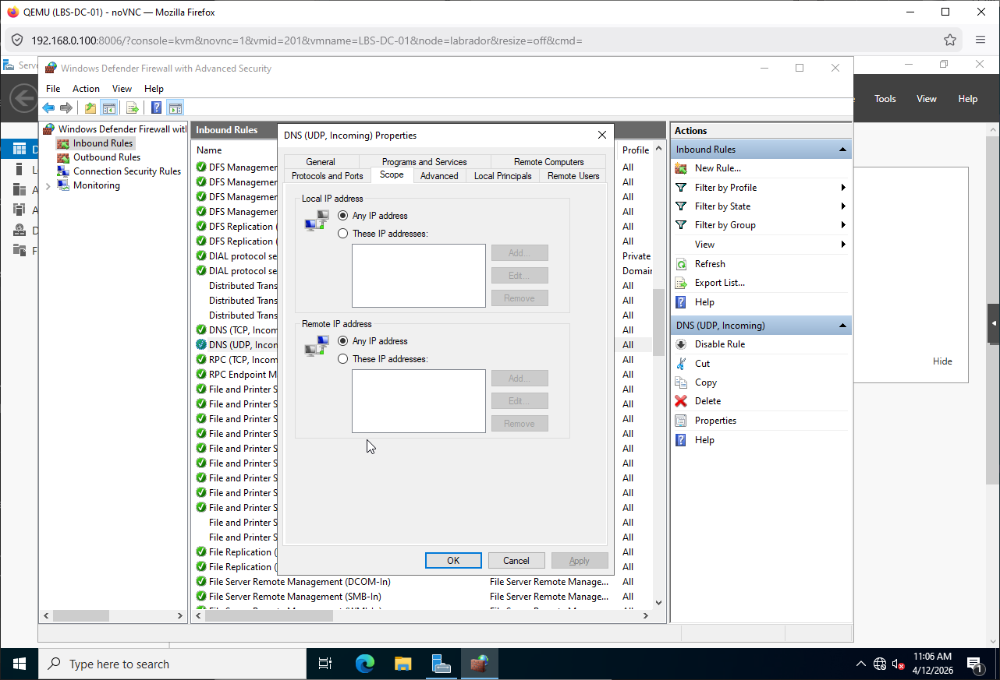
key takeaways
My initial intention with this lab was to get some exposure to Active Directory, but it ended up teaching me much more about network design and troubleshooting than I initially expected. I tried to keep the design philosophy aligned with modern enterprise networks, though of course many things are still missing (MDM, automatic workstation provisioning, wireless access points, enterprise network management, VPN, advanced security appliances such as EDR, IDS/IPS, SIEM, cloud gateway integration, etc.) I now have a solid, segmented starting point to test deployment of all of these things in the future.
During initial planning for this lab it was daunting to manage scope creep. I would be configuring something in pfSense and think "Oh, wouldn't it be cool if I set up automated endpoint provisioning? Or configured an ELK stack and created Powershell scripts to generate network telemetry?" Yes, it would be very cool, and nothing is stopping me from implementing those things now. But remaining focused on the task at hand, creating a segmented network and setting up Active Directory was the base I needed to build first in order to do all those other neat things.
One thing that stood out to me having managed Google Workspace for over two years is how intuitive Active Directory's identity and access management workflow is. I expected the transition to require a lot more research than it did - the main hurdle was locating ADUC. Organizational Unit design, governing user access and enforcing Group Policies aligned incredibly close to cloud-based IAM solutions.
Thank you for reading my writeup! If you have any questions feel free to reach out via the contact button below, or connect with me on LinkedIn and shoot me a message there.